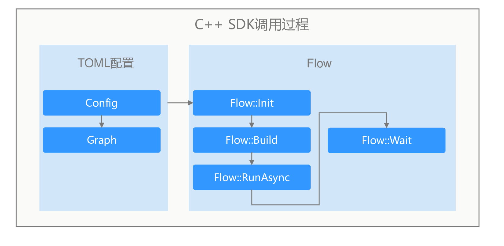

C++开发方式
开发前请先准备好ModelBox开发环境，详见环境准备章节。
C++ SDK API接口说明
ModelBox提供了流程图的创建、运行、关闭等基础接口。下面是C++中使用的API列表：
| API接口 | 参数说明 | 函数说明 |
|---|---|---|
| Flow::Init | configfile: 指定config文件的路径 format： 指定图文件的格式，可选项为 FORMAT_AUTO,FORMAT_TOML，FORMAT_JSON |
初始化ModelBox服务，主要包含功能如下： 1. 读取driver参数，获取driver的扫描路径 2. 扫描指定路径下的driver文件，并创建driver实例 3. 加载流程图并转换为ModelBox可识别的模型 4. 初始化设备信息，性能跟踪和数据统计单元 |
| Flow::Init | name: 指定的图的名称 graph: 存储图的字符串 format：指定图的格式 |
与上面Init的区别是，上面通过读取文件的方式，而此函数通过读取字符串的方式，其他功能相同 |
| Flow::Init | is: 图的输入流istream fname: 输入的图名称 |
功能与上面Init相同， 区别在于输入的是流保存的图信息 |
| Flow::Init | config: Configuration指针，存储图信息 | 功能同上 |
| Flow::Build | / | 用于构建图，将图模型转为可以运行的Node节点并且建立好数据通道 |
| Flow::Run | / | 图的运行： 同步方式，图运行完成后返回 |
| Flow::RunAsync | / | 图的运行： 异步运行， 调用后直接返回， 通过调用Wait()函数判断运行是否结束 |
| Flow::Wait | millisecond: 超时时间， 以毫秒为单位 ret_val: 图运行的结果 |
等待图运行结束，当图的运行时间超过millisecond表示的时间时，则强制停止图的运行，并返回TIMEOUT |
| Flow::Stop() | / | 强制停止运行中的图 |
| Flow::CreateExternalDataMap | / | 当图中的第一个节点为input节点时， 使用此函数可以创建一个输入的ExternalDataMap， 开发者可以通过向ExternalDataMap数据中赋值并传递数据给Input节点。具体使用方法可参考<外部数据交互>章节 |
C++开发调用流程图时，需要先安装C++的运行包，然后再编写C++函数，调用Flow执行API执行流程图。Flow流程图接口调用过程如下图所示：

- 安装C++ SDK包
- 开发流程图，配置基础部分和图部分。
- 调用Flow::init接口，输入流程图文件。
- 调用Flow::build初始化流程图。
- 调用Flow::run_async，异步执行流程图。
- 数据输入，数据处理，结果获取。
- 调用Flow::Stop释放图资源。
流程图配置
SDK模式的流程图的开发和标准模式基本一样，具体开发介绍见流程图开发章节。SDK模型区别可以通过设置input和output端口作为外部数据的输入和输出。具体配置如下：
[driver]
dir=""
skip-default = false
[graph]
graphconf = '''digraph demo {
input1[type=input] # 定义input类型端口，端口名为input1，用于外部输入数据
resize[type=flowunit, flowunit=resize, device=cuda]
model_detect[type=flowunit, flowunit=model_detect, device=cuda]
yolobox_post[type=flowunit, flowunit=yolobox_post, device=cpu]
output1[type=output] # 定义output类型端口，端口名为output1，用于外部获取输出结果
input1 -> resize:in_image
resize:out_image -> model_detect:in
model_detect:output -> yolobox_post:in
yolobox_post:out -> output1
}'''
format = "graphviz"
如上图，input1和output1端口作为图的输入和输出，如果需要设置多个外部输入输出端口，可按照图配置规则配置多个。
流程图运行
导入ModelBox包
编写时，需要引入头文件，并在编译时链接ModelBox库。
#include <modelbox/flow.h>- 图创建初始化和启动
modelbox::Flow CreateFlow(const std::string &file) { // 创建Flow执行对象 auto flow = std::make_shared<modelbox::Flow>(); // 输入流程图配置文件 MBLOG_INFO << "run flow " << file; auto ret = flow->Init(file); if (!ret) { MBLOG_ERROR << "init flow failed, " << ret.WrapErrormsgs(); return nullptr; } // 创建流程图 ret = flow->Build(); if (!ret) { MBLOG_ERROR << "build flow failed, " << ret.WrapErrormsgs(); return nullptr; } // 异步执行 flow->RunAsync(); return flow; }外部数据交互
业务数据往往需要输入给流程图进行处理，同时处理完成后需要获取结果。一次数据的发送和结果过程如下：
modelbox::Status SendExternalData(std::shared_ptr<ExternalDataMap> ext_data, void *data, int len) { // 申请外部数据对象 auto output_buf = ext_data->CreateBufferList(); // 申请内存，并设置内容 output_buf->Build({len}); auto buff = (int*)output_buf->MutableData(); memcpy(buff, data, len); // 将数据发送到input1端口 auto status = ext_data->Send("input1", output_buf); if (!status) { return {status, "send data to input failed."}; } // 关闭输入 status = ext_data->Close(); if (!status) { return {status, "external data close failed."}; } return modelbox::STATUS_OK; } modelbox::Status RecvExternalData(std::shared_ptr<ExternalDataMap> ext_data) { OutputBufferList map_buffer_list; // 接收数据 while (true) { auto status = ext_data->Recv(map_buffer_list); if (status != STATUS_SUCCESS) { if (status == STATUS_EOF) { // 数据处理结束 break; } // 处理出错，关闭输出。 auto error = ext_data->GetLastError(); ext_data->Shutdown(); MBLOG_ERROR << "Recv failed, " << status, << ", error:" << error->GetDesc(); break; } // 处理结果数据 auto buffer_list = map_buffer_list["output1"]; //开发者自定义结果处理逻辑 ProcessData(buffer_list); } return modelbox::STATUS_OK; } // 数据发送获取 modelbox::Status Process(std::shared_ptr<modelbox::Flow> flow, void *data, int len) { ... // 创建外部输入句柄 auto ext_data = flow->CreateExternalDataMap(); // 发送数据到流程图 SendExternalData(ext_data, data, len); // 获取输出结果并处理 RecvExternalData(ext_data); ... }图的资源释放
void FlowStop(std::shared_ptr<modelbox::Flow> flow) { // 结束执行 flow->Stop(); }
开发者可以根据自身业务，选择在合适的地方调用图的启动停止和数据发送。如果用户业务是多线程时，可以将flow对象可作为多线程共享对象，每个线程都往同一流程图发生数据，这样可以充分利用ModelBox的bacth并发能力。
C++日志
默认情况，ModelBox的SDK输出日志到console，业务需要注册相关的日志处理函数，注册方法可参考日志章节。